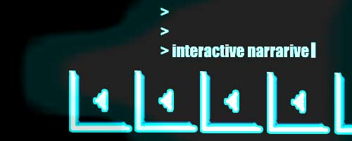
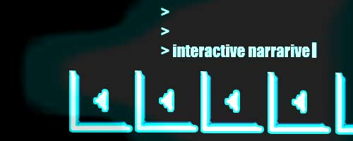

+ +
The page includes links to MUSH.
::CrossReference
last 5 articles posted by Lange:: Call For Articles - Feb 3 1998:: SWITCH SOUND CULTURE GATEWAY - Jan 23 1998:: Editor's Notes: Sound - Jan 23 1998:: Calendar of Events - Jan 23 1998:: Phiber Optik and the Masters of Deception - Jan 1 1998:: Editors Notes - Mar 15 1997:: Calendar Page - Nov 2 1996:: SWITCH MUDs GATEWAY - Nov 2 1996:: Nanotechnology, Fullereness, & the Golden Mean - May 1 1996:: Linda Jacobson Interview Virtual Reality Evangelist - Sep 1 1995 view all posts made by Lange
last 5 articles posted by Lange
:: Call For Articles - Feb 3 1998
:: SWITCH SOUND CULTURE GATEWAY - Jan 23 1998
:: Editor's Notes: Sound - Jan 23 1998
:: Calendar of Events - Jan 23 1998
:: Phiber Optik and the Masters of Deception - Jan 1 1998
:: Editors Notes - Mar 15 1997
:: Calendar Page - Nov 2 1996
:: SWITCH MUDs GATEWAY - Nov 2 1996
:: Nanotechnology, Fullereness, & the Golden Mean - May 1 1996
:: Linda Jacobson Interview Virtual Reality Evangelist - Sep 1 1995
view all posts made by Lange

 
